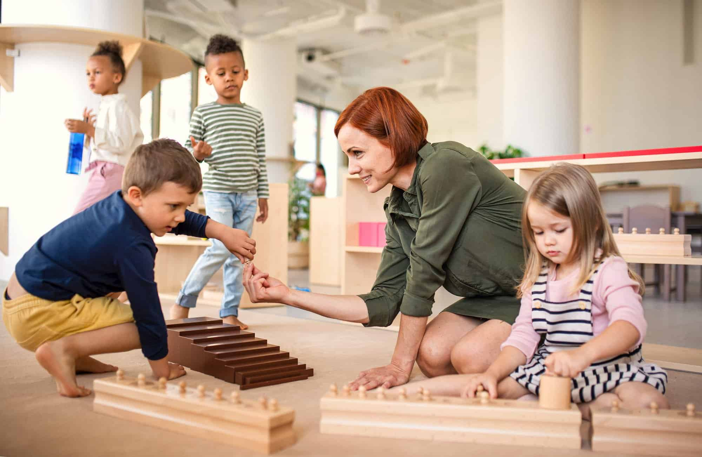

<div class="containercarousel">
<carousel id="carousel">
    <div class="carousel--background">
  <slide class="carousel--div">
    
    <div class="carousel--div--contain">
        <h2>ESCUELA INFANTIL SEMILLA</h2>
        <p>Nuesta Escuela infantil "Semilla" se encuentra ubicada en la calle Wallaby, número 42, en el municipio de Sidney, dentro de la provincia de Invent.
        </p>
        <p>Con un total de 100 personas de alumnado en edades comprendidas entre 2 y 5 años, dividas en 4 clases.</p>
    </div>
  </slide>
</div>
  <slide>
    
    <div class="carousel--div--contain">
        <h2>LOS MEJORES PROFESIONALES</h2>
        <p>Entre nuestra plantilla de profesionales se encuentran educadores y educadoras que promoverán el crecimiento autónomo del alumnado.</p>
    </div>
  </slide>
  <slide>
    
    <div class="carousel--div--contain">
        <h2>HERRAMIENTAS DE MADERA</h2>
        <p>Todos los objetos utilizados en las áreas de trabajo de nuestra escuela están realizadas en madera pulida y son totalmente adecuadas para el uso infantil.</p>
    </div>
  </slide>
  <slide>
    
    <div class="carousel--div--contain">
        <h2>EDUCACIÓN EN VALORES</h2>
        <p>Durante la infancia, la educación en valores como el cuidado del medioambiente son especialmente importantes. Es por ello, que promovemos acciones como el reciclaje.</p>
    </div>
  </slide>
  <slide>
    
    <div class="carousel--div--contain">
        <h2>DESARROLLO DE CAPACIDADES ARTÍSTICAS</h2>
        <p>Nos parece primordial el desarrollo cognitivo de los menores a través de la utilización de las artes: pintura, música, baile, teatro, etc...</p>
    </div>
  </slide>
  <slide>
    
    <div class="carousel--div--contain">
        <h2>USO DE METODOLOGÍA MONTESSORI</h2>
        <p>Promover la autonomía es uno de nuestros objetivos primordiales y lo trabajamos a través de la metodología Monstessori.</p>
    </div>
  </slide>
  <button carousel-control direction="prev" id="carousel">
    <span class="carousel-control-prev-icon"></span>
  </button>
  <button carousel-control direction="next" id="carousel">
    <span class="carousel-control-next-icon"></span>
  </button>
</carousel>
</div>
